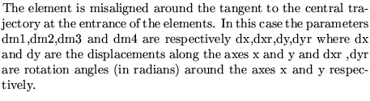
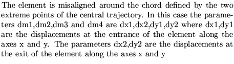
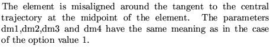
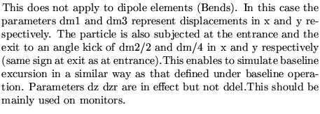

Input format
MISAlignment data definition....(maximum 80 characters)
Name dm1 dm2 dm3 dm4 dz dzr ddel option
.............
Name dm1 dm2 dm3 dm4 dz dzr ddel option
99,
Parameter definitions
For all values of the option parameter, the parameters dz and dzr
are the values of the longitudinal displacement and the rotation
angle (in radians!!) around the longitudinal axis. The values
dm1,dm2,dm3 and dm4 are assumed to be small (either in displaments
or angles). The program uses approximate formulae to set up the
misaligned element.
The parameter option can take the three values 1,2 or 3 which
determines the nature of the misalignment
option parameter to determine the nature of the misalignment
1 
2 
3 
4 
Examples
The example comes from demo6. Please note that when an element has zero length, the option of the misalignment of that element must be 1.
MISALIGNMENT DEFINITION DDCH 300E-06 300E-06 300E-06 300E-06 0.0010 0.001 0.0 2 DFCH 300E-06 300E-06 300E-06 300E-06 0.0010 0.001 0.0 2 HC 300E-06 300E-06 300E-06 300E-06 0.0010 0.000 0.0 2 DSH 300E-06 300E-06 300E-06 300E-06 0.0010 0.001 0.0 2 QS1D 300E-06 300E-06 300E-06 300E-06 0.0010 0.001 0.0 2 QS2F 300E-06 300E-06 300E-06 300E-06 0.0010 0.001 0.0 2 QS2D 300E-06 300E-06 300E-06 300E-06 0.0010 0.001 0.0 2 QS3F 300E-06 300E-06 300E-06 300E-06 0.0010 0.001 0.0 2 QS3D 300E-06 300E-06 300E-06 300E-06 0.0010 0.001 0.0 2 99,